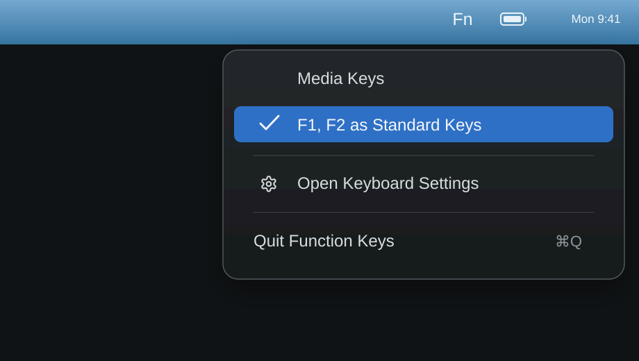

Function Keys
A tiny macOS menu bar app for viewing and toggling whether F1, F2, etc. behave as standard function keys. Built for macOS 13+.
Download Latest .dmg
Fetching latest version...
Menu Bar Only
No Dock icon clutter. Lives quietly in your menu bar, instantly showing you the current state of your function keys.
System Native
Reads and writes the official macOS preference (com.apple.keyboard.fnState). Changes made in System Settings are reflected immediately.
Privacy First
Function Keys does not collect data, access the network, or store app-specific settings. It's completely open source.